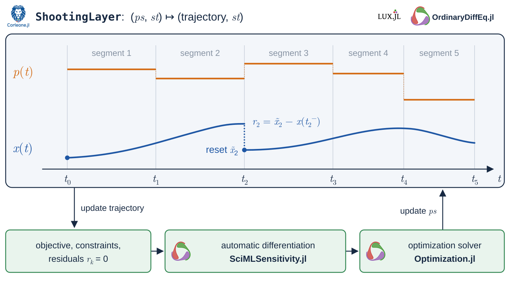

Getting started
Installation
Install Corleone together with an ODE solver and LuxCore:
using Pkg
Pkg.add(["Corleone", "OrdinaryDiffEqTsit5", "LuxCore"])To optimize, also add Optimization.jl, a solver, an AD backend, and ComponentArrays. This page uses Ipopt:
Pkg.add(["Optimization", "OptimizationMOI", "Ipopt", "ForwardDiff", "ComponentArrays"])Each tutorial lists the packages it uses. To work on a local checkout instead, run Pkg.develop(path = "path/to/Corleone.jl").
The core workflow
Every Corleone problem follows the same steps:
- Write the dynamics as an ordinary SciML
ODEProblem. - Annotate the parameters and states that should be optimized, and give each one a time grid. An annotation paired with a grid,
Tunable(i) => grid, is a schedule. - Build a
ShootingLayerand callLuxCore.setupto get the tunable valuespsand the fixed datast. - Evaluate the layer to get a
Trajectory, or wrap it in aCorleoneDynamicOptProblemwith an objective and constraints. - Convert the model to an
OptimizationProblem, solve it, and map the result back to the structured parameters.
The figure shows this loop. The layer integrates the dynamics segment by segment for the current parameters, the objective and constraints are evaluated on the resulting trajectory, and the optimizer updates ps using derivatives from AD.

The rest of this page walks through these steps on a one-state example.
A first shooting layer
Consider $\dot{x}=p(t)$ with $x(0)=0$ on $[0, 2]$. We let the parameter $p$ switch once, at $t = 1$, so it is a control with two interval values. We start with $0.25$ on the first interval and $0.75$ on the second.
using Corleone, LuxCore, OrdinaryDiffEqTsit5, Random
problem = ODEProblem((x, p, t) -> [p[1]], [0.0], (0.0, 2.0), [0.25])
control = Tunable(1; default = [0.25, 0.75],
lowerbound = 0.0, upperbound = 1.0) => [1.0]
layer = ShootingLayer(problem, Tsit5(), control; controls = [1])
ps, st = LuxCore.setup(MersenneTwister(42), layer)
trajectory, next_st = layer(nothing, ps, st)
(; times = trajectory.t, states = round.(trajectory[:u₁]; digits = 6),
controls = trajectory[:p₁])(times = [0.0, 1.0, 2.0], states = [0.0, 0.25, 1.0], controls = [0.25, 0.75])Tunable(1; ...) => [1.0] makes the first parameter tunable and lets it switch at $t = 1$. ps holds the values an optimizer may change; st holds the schedules, caches, and anything marked Constant. Numerical problems name their states :u₁, :u₂, … and their parameters :p₁, :p₂, …, and the trajectory can be indexed with these symbols.
The final state is $0.25 \cdot 1 + 0.75 \cdot 1 = 1$.
Optimizing the control
Now we choose the two control values so that the state passes through $0.5$ at $t = 1$ and reaches $1.5$ at $t = 2$. The objective is a Julia expression, and u₁(t) reads the state at time t:
using ComponentArrays, ForwardDiff, Optimization, OptimizationMOI, Ipopt
model = CorleoneDynamicOptProblem(layer,
:((u₁(1.0) - 0.5)^2 + (u₁(2.0) - 1.5)^2); ps, st)
optprob = OptimizationProblem(model, AutoForwardDiff())
result = solve(optprob, Ipopt.Optimizer(); tol = 1e-12, print_level = 0)
_, reconstruct = pack(default_vectorizer(), ps)
optimized, _ = layer(nothing, reconstruct(result.u), st)
(; retcode = result.retcode, controls = round.(optimized[:p₁]; digits = 6))(retcode = SciMLBase.ReturnCode.Success, controls = [0.5, 0.999999])The optimizer finds the controls $0.5$ and $1.0$. pack turns the structured parameters into the flat vector the optimizer works with, and reconstruct maps the solution back so we can evaluate the layer again.
Next steps
- The linear quadratic regulator tutorial adds an integral cost and a fine control grid.
- The Manual explains each building block: parameter schedules, single and multiple shooting, initial guesses, trajectories, and objectives and constraints.
- For symbolic dynamics and costs, start with the ModelingToolkit tutorial.
- To fit parameters to data, see CorleoneInverse; to design experiments, see CorleoneOED.